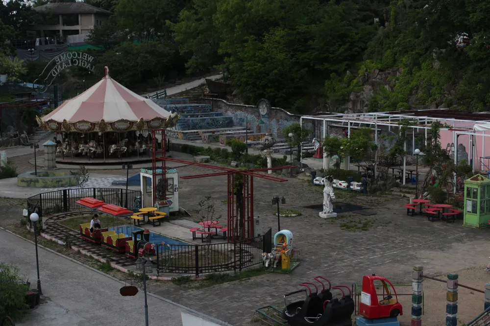

용마랜드
서울 중랑구 망우동에 위치한 용마랜드는 1983년에 개장하여 2011년에 운영을 종료한 폐놀이공원입니다.
현재는 놀이기구가 그대로 방치된 빈티지하고 몽환적인 분위기 덕분에 각종 뮤직비디오, 영화, 화보 촬영 및 스냅사진 출사지로 큰 인기를 끌고 있습니다.

서울 중랑구 망우동에 위치한 용마랜드는 1983년에 개장하여 2011년에 운영을 종료한 폐놀이공원입니다.
현재는 놀이기구가 그대로 방치된 빈티지하고 몽환적인 분위기 덕분에 각종 뮤직비디오, 영화, 화보 촬영 및 스냅사진 출사지로 큰 인기를 끌고 있습니다.